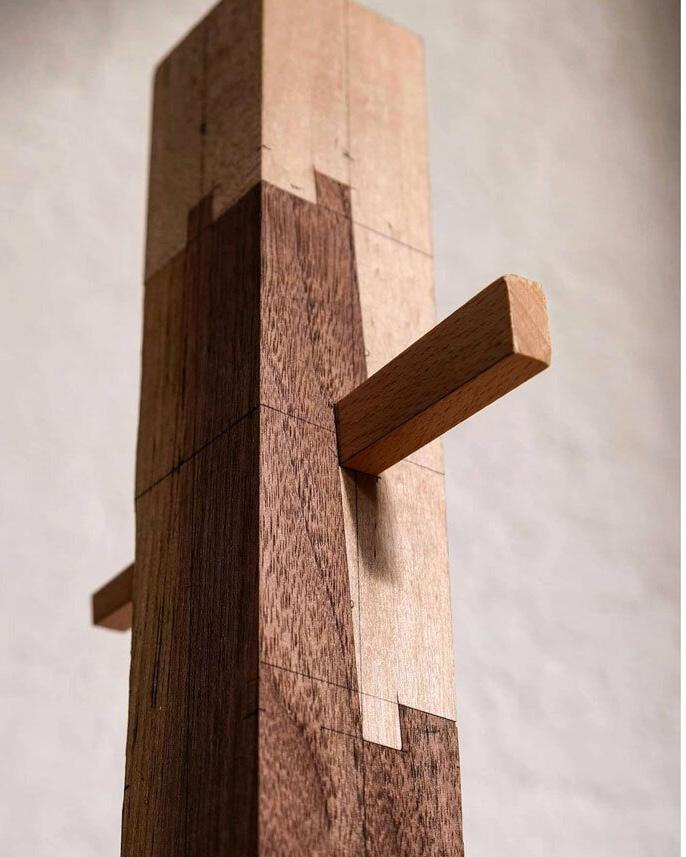
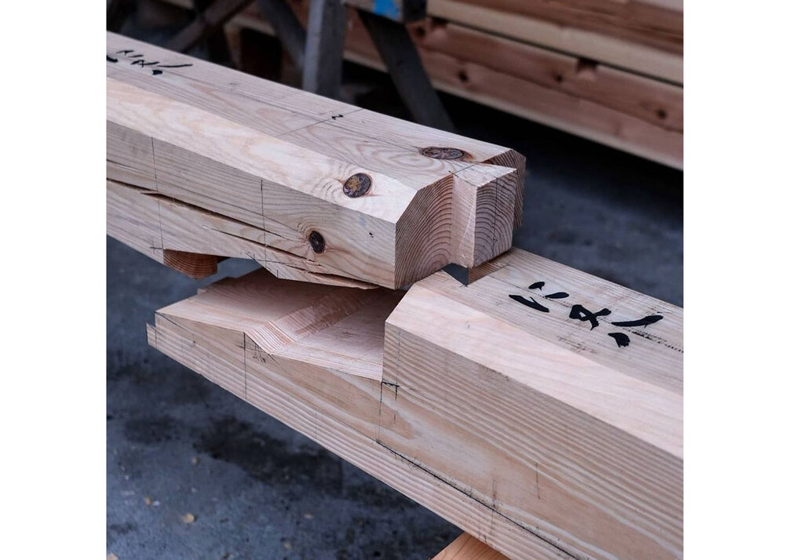
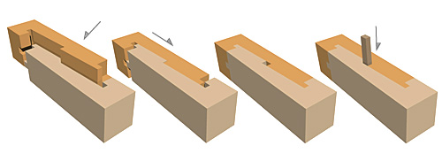

Kanawa Tsugite – Interlocking Strength
Kanawa-tsugite is a masterful Japanese timber joint used to connect beams along their length. Its interlocking geometry delivers strength, elegance, and the uncanny feeling that wood can be woven like cloth.

Understanding the Geometry
The joint is composed of three interlocking wedges. Two outer cheeks capture a central spline, while angled shoulders lock the assembly when force is applied. Because the pieces slide together along a single axis, the craftsman must work with millimetre precision—any deviation and the joint binds.

Cutting Sequence
Traditionally the Kanawa-tsugite was cut entirely by hand using marked reference faces. Contemporary luthiers and joiners increasingly rely on CNC templates, but the logic remains the same: cut the housings first, refine the tails, then incise the locking wedges.
Material Considerations
Density and grain direction dictate how forgiving the joint will be. Hinoki cedar was historically favoured: its straight fibres resist splitting, and its springiness absorbs seasonal movement. Modern makers experimenting with maple or ash often reinforce the joint with concealed dowels.

Lessons for Designers
The Kanawa-tsugite is more than a woodworking curiosity—it’s a study in constraint-driven design. Every surface nests against another, and the entire form communicates how it wants to be assembled.
“When you pare away everything that doesn’t serve the structure, you’re left with poetry: a joint that only fits together one way, and rewards patience with permanence.”
Further Reading
- Wood Joints in Classical Japanese Architecture – Nakahara
- Crafting Modular Connections – Contemporary Timber Guild Journal
- Beyond Dovetails: Parametric joinery explorations